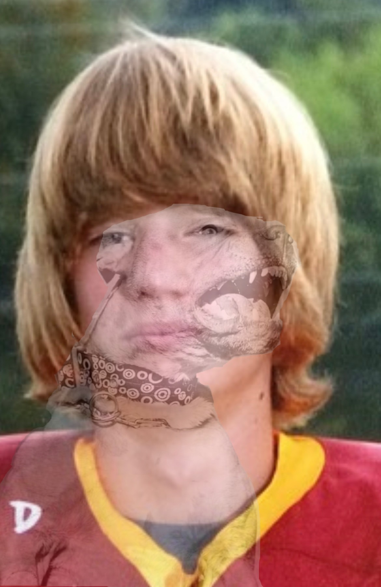

Week {{ w.week_number }}:
{% for p in power %} {% if p.week_number == w.week_number %} {% if p.dog_shitter_of_week == 1 %}
DOG OF THE WEEK
{% endif %} {% if p.dog_shitter_of_week == 2 and p.upload_name != None %}
SHITTER OF THE WEEK
{% endif %} {% if p.dog_shitter_of_week == 2 and p.upload_name == None %}

SHITTER OF THE WEEK
{% endif %} {% if p.upload_name != None and p.dog_shitter_of_week != 2 and p.dog_shitter_of_week != 1 %}
{% endif %}
{% endif %} {%endfor%}
Week 12:
- Colt- Overpowered, if not inevitable.
- Jason- A fantasy demon in his own right, but compared to colt, like a smaller demon. Think as if Colt is Hades and Jason is a combination of his little blue and purple henchmen. You know from Hercules. The Disney movie. You probably remember.
- Jake(up)- With the loss of Kupp last week, Jake now goes as Kelce goes. And Kelce goes to the endzone. A lot.
- Bryan(down)- Battered by the slings and arrows of past defeated foes now sending blood in the water, Bryan must find the winning combination once more.
- Sam(down)- The wrong Detroit running back got traded. Time to see if the combo of JT and KW3 can make up the lost production or the 1 yard God.
- Teteo- A loss always hurts, but the best cure for an L is a great excuse! Teteo’s studs came through while the fill-in fuckboys faltered fucking fabulously.
- Ethan(up) - The wins keep accumulating for Ethan who many had pegged early season outside the playoff bubble. The margins are still tight, but we may have the makings of a Cinderella run on our hands.
- Zack(down)- A pattern has formed for this team, consistent low scores with seemingly random blips of greatness. The biggest issue is that the blips are few and far between. It’s hard to count on anything consistent from Zack’s boys, but if they can sneak into the playoffs this game of Russian roulette may spell doom for his unlucky opponent.
- Josh(up)- It’s hard not to root for a man trying to defeat his fate. Josh was able to take down Bryan’s #1 overall ranked team this week sending not only the elites into turmoil, but also making the #FightForTheChip a two man race heading into the last few weeks.
- Andrew- Andrew played the role of the pool shark perfectly. Weeks and weeks of down scores. Consistently lowering expectations until BAM! Out of nowhere he smokes the competition once again. It’s hard to tell in the coming weeks what version of Andrew’s team we will get, but one thing is certain. Don’t overlook him.
- Kyler(down)- What was once a healthy cushion against eating a chip that harnesses the natural defense mechanisms of a plant in order to cause pain has now dissipated and #TheChip is again a two man race. The next three weeks will decide who will face the flames.
- Caleb- With two teams fighting for their lives to avoid hurting themselves for the league’s pleasure, we’re not really sure why you’re still in here. Chalk it up to a clerical error, I guess. But you’re just as likely to miss the playoffs as they are so no harm in leaving you in the pit. Would be a lot of work to get you out of here and cleaned up, you know how it is.
DOG OF THE WEEK

SHITTER OF THE WEEK
Week 11:
- Colt- The undisputed king of the league. Any loss is a fluke and any win was inevitable. Avoid in the playoffs at all costs.
- Jason- Eked by this week, but a win is a win. Can he get it together for the playoffs?
- Bryan(up)- Been there, done that. All that matters now is getting that bye.
- Sam(up)- New look for a team that just hung 150. Too much meddling with a good thing?
- Jake- Not only lost the game, but also one of the two gods of the squad.
- Teteo(down)- The yeti came up short, but the rest of the roster provided. Thankfully Teteo’s opponent was asleep at the wheel.
- Zack(down) - He was the opponent.
- Ethan(down)- No one has had more mushroom stamp losses than Ethan since the league started tracking this stat 4 years ago.
- Kyler- All hope is lost with the L this week and only one man is to blame:
- Andrew- Unable to put up big points, things are looking grim as we head into the final stretch of the regular season. Maybe a recent trade can fire up some hope.
- Josh(up)- Out of the shit pit once more! Josh will not be confined to the annals of history like the Ethan, the only winless season on record in Big Dawgs history. Live it up! Now to set your sights on win number 2.
- Caleb(down)- Constantly climbing out of and falling into the septic take of the league has left this team eternally stinky and probably stricken with several disgusting diseases. Giving up the only win to a team that had been projected by some to finish the season 0-14 is the latest in a string of missteps. The black sheep of The House this season may be better off hiding in the sewers to not being down the image of that great clan.
DOG OF THE WEEK
SHITTER OF THE WEEK
Week 10:
- Colt- A week on top even after a loss is high praise. Colt will need to prove us right to stay at one.
- Jason(up)- Gif gimp gives gallons of glorious goodness.
- Teteo(down)- We don’t blame the Yeti. We blame everyone else.
- Bryan(down)- A close game in what should have been an easy blowout is reason for concern.
- Jake(down)- Low scoring win isn’t a great look, but a win all the same.
- Zack- You won’t win many weeks with a low score like this. But you did win, so for that you stay.
- Ethan(down) - Previously losing to Kyler was a very bad sign. But he’s good now so don’t feel bad!
- Sam(up)- Like Han, Chewie, Luke, and Leia in the garbage compactor on the Death Star. You were saved moments from destruction. Some might call him a dog but a dog killer would be more appropriate. I think we all agree this beast could take a pitbull with his bare hands.
- Kyler(up)- Things are starting to change for this team. With 5 weeks to go there is a slim chance of sneaking into the playoffs for this once doomed franchise.
- Andrew(down)- Hard to blame you for losing on a week without three massive contributors, but picking up an RB1 off waivers should help the sting.
- Caleb- The black sheep of The House this season, Caleb disappoints once again. A middling record holds him just outside the playoff bubble.
- Josh- What used to be a tight race to the bottom has now turned to a lowly existence in the damp dark for Josh. The preparations have been made for the chip and that date with destiny is all but set. What remains to be seen is who may fall to this depraved roster before the season is out

DOG OF THE WEEK
SHITTER OF THE WEEK
Week 9:
- Colt- CMC is unleashed and the league is fucked.
- Teteo(up)- No Breece, no problem. The Yeti will pick up the slack.
- Bryan(up)- Corrupt? Perhaps. Consistent? Certainly. Call him Joey Chesnut, cause he got that DAWG in em.
- Jake(down)- Live by the Raheem, die by the Raheem
- Jason- Didn’t have Ekeler and Herbert, but the fill-ins played just as well. No excuses for this loss.
- Zack(up)- Just like that hotdog, Zack is coming back up.
- Ethan(down) - Your faith in Davante is misplaced. The loss of Chase will hurt greatly.
- Andrew- The first overall pick is looking rough. Luckily Andrew has Najee to lead the way.
- Sam- A slight win over Josh’s winless wonder won’t move you up the rankings, but it doesn’t hurt either.
- Kyler(up)- If it wasn’t for the early season disaster run, this would look like a respectable week. Unfortunately this will just chalk up as another L.
- Caleb(up)- Escaping the Shitter of The Week stink and getting back to .500 is no small feat. Wait, yeah it is actually.
- Josh(down) -
DOG OF THE WEEK
SHITTER OF THE WEEK
Week 8:
- Colt(up)- Hell has frozen over and the cursed one has risen.
- Jake(up)- This ragtag outfit just won’t quit. Raheem the dream leads the way.
- Teteo(down)- Breece-y come, Breece-y go.
- Bryan(down)- Bye week or not the roster has some serious questions to answer.
- Jason- Taysom Hill banished to the shadow realm. More fuel for the fire.
- Ethan(up)- Ethan keeps rising. This is no fluke, the roster is for real.
- Zack(down) - He held strong against bye week drops and faced god walking backwards into hell for this win.
- Andrew- Unable to take advantage of the bye week advantage over Zack, Andrew continues to dwell in the lower tier.
- Sam- Big letdowns came against a tough opponent. Swift can’t return “swift”-ly enough!
- Kyler(up)- Maybe not the highest scorer, but with hard work, grit, and sneaky athleticism, Kyler was able to put one layer between himself and a really hot mouth. This guy is cut from three quarters of the right stuff, pat yourself on the back DAWG.
- Josh(down)- Will you be using 2% or whole to extinguish the pain?
- Caleb - Caleb continues to be unable to find a competent quarterback like a blind fool fumbling around with his limp dick in hand trying to masturbate. Sadly we may see Caleb escape his role as the back end of the league’s human centipede conga line thanks to the triumphant return of Deandre Hopkins and new spark from Zeke, we will savor these fleeting days.
DOG OF THE WEEK
SHITTER OF THE WEEK
Week 7:
- Teteo- Strong enough to sustain a bye week blunder. The yeti wrangler remains top dawg.
- Bryan- Another solid week, another solid win. The train keeps rolling.
- Jake(up)- Not many points scored by Jake, but he catches a break against one of the winless twins.
- Colt(up)- After several weeks amassing a deep and talented roster colt is putting together a string of impressive wins. The loss of Hollywood would cripple many, but for colt it is next man up.
- Jason(up)- Taysom flopped like a limp dick, but luckily the baby muncher stood strong.
- Zack(down)- A solid showing down a few men, nothing to be ashamed of. But when some go up, others must go down.
- Ethan - A candidate for comeback player of the year, Ethan is putting together a respectable 2022 resume. Shoving Caleb's face in the mud at the same time.
- Andrew(up)- A recovery from the last two weeks of embarrassment is a welcome sight for Andrew who many had pegged as an early season contender.
- Sam(down)- With several key players on bye this week Sam was forced to roll out some questionable starters this week and it showed in the final score. Losing a winnable game like this hurts, but the weeks ahead should hold a return to form for our beloved code monkey.
- Josh(up)- Clawing out of the depths, Josh wasn’t able to secure his first win this week but several trades appear to finally be paying off.
- Kyler- TThe second of the league’s dual winless wonders, Kyler started out the week with a promising projection, but ultimately was let down by his team once again.
- Caleb - It’s hard to find the limit on what is too harsh to say about Caleb’s 2022 week 6 performance. Literally the worst a team has ever done in the entire history of this fine league. Even going back to before realignment when we were a lowly standard scoring format. I don’t even have to look it up to be sure, I just get a pit in my stomach looking at a score that low. A great man once said, “in a league where you get a whole point just for catching the fucking ball, this team couldn’t score 100 points”. Well today we amend that quote for a team that could not score nearly half of that mark. I am in awe of what you put together. You could throw a dart at a list of random waiver wire players and score higher. We have two teams that have not won a game halfway through the regular season, yet a team with a .500 record managed to be worse than both of them. Congratulations on your history making week.
DOG OF THE WEEK
SHITTER OF THE WEEK
Week 6:
- Teteo- What can we say that hasn’t already been said? Breece has arrived and the Yeti watches over his icy kingdom.
- Bryan- Call it luck, call it skill. Just don’t call him a loser.
- Jake(up)- With a staggering 217.24 points, Jake has demolished league's previous record. We watched from a safe distance as not two but TEN gods unleashed their wrath upon the infirmary housing Josh's players. Jake’s devotion to Raheem has paid dividends. Count him amongst the elite of the league.
- Colt(up)- Like a pirate on the seas colt has plundered several teams of all their booty. Treacherous acts against vulnerable sailors have landed Captain Colt comfortably within the top 5.
- Zack- Zack stays near the top this week thanks to solid performances leading up to his week 5 mega-dud.
- Jason(up)- 2 in a row he’s heating up! (Thanks to starting the Mormon at TE, thereby skirting unspoken guidelines and causing them to be spoken).
- Ethan(up) - A victim of a dickslap courtesy of Jason’s morally questionable roster. Still a solid showing against a tidal wave of points leave. Ethan in the middle ground.
- Sam(down)- Believe it or not it does actually help to have your first round pick available to play for you. In the absence if Swift, Sam’s team got stuck in the mud.
- Caleb(up)- An solid win against a low scoring Zack has Caleb flying high. Though the height is relative to the burning trash pile of teams just below him. So not really that high.
- Andrew(down)- Scientists are currently studying the results of Andrew’s last two games. Never in human history has a gathering of such abysmal performances been captured on one team. Truly could not have scored less if he chose players at random off the waiver wire.
- Kyler- Truly the great tragedy story line of the first half of the season has been Kyler and his three headed RB monster. Now reduced to two with the loss of Javonte, the results have been disappointing to say the least. Of course playoffs are always the goal, upsetting the top tier teams and avoiding the league punishment may be more at the forefront of this head office’s.
- Josh - 4 out of 5 weeks below 100 points. A questionable roster composition. The lowest points scored in the league with the most scored against. Josh has been doomed to the fate of league punching bag. Make sure when you eat the paqui chip to not drink water. It does little to soothe the heat. Also avoid rubbing your eyes before washing your hands.

DOG OF THE WEEK
SHITTER OF THE WEEK
Week 5:
- Teteo- One loss won't keep a good yeti down.
- Bryan(up)- Consistency beats talent when talent fails to be consistent.
- Andrew(down)- Only two players scoring in double digits, one being a kicker. A showing for the record books. The biggest shit records that is!
- Jake- A solid showing lead by the Chubba-chubba Choo-choo train.
- Zack- Big cat lost its roar this week, but consistent output and faith in a good week 5 keep him locked in.
- Sam(up)- Pulling victory from what appeared to be the jaws of defeat is deserving of moving up.
- Colt(down) - Mental midget drops one against the underdog.
- Ethan(up)- "Won A Couple" is an apt new moniker for Ethan's organization. The loss of Cordarrelle may force him to change it for week 5.
- Jason(up)- Ekeler, Jacobs, and Reek with a group pop off this week to get Jason out of his rut. God help us if his tight end ever decides to show up.
- Kyler(down)- Man down. Press F to pay respects.
- Caleb- Caleb has been able to increase his weekly score every single week and it finally paid off. A roster shakeup trade could make that prospect even more exciting. He will need another win before making the move up.
- Josh - If Josh can make this season turn around I think he will look to use some of his winnings on an alarm clock. An early morning Sunday out for Kamara just before the 6.30 am London game sunk his chances before the sun had even crested the horizon. If there is some silver lining to be it is that this week marks Josh's highest point total for the year, even higher had he been able to slot in a warm body for Kamara. While the beginning of the season has been historically bad for Ragz, there remains several bottom feeders at or near his record who could provide an opening to reaching up towards the winning column as we move towards the middle of the fantasy regular season.
SHITTER OF THE WEEK
Week 4:
- Teteo- God squad is coming to your town, and they’re gonna fuck you up.
- Andrew(up)- Consistent production top to bottom. Like a well oiled fantasy machine.
- Bryan(down)- A down week, but a bounce back is in order with a fresh new trade piece.
- Jake(down)- Both gods showed up. Unfortunately no one else did.
- Zack(up)- A decent showing amongst a down week for the league. But his depth has shined bright this week.
- Colt(up)- A solid comeback after last week’s loss. Colt needs to keep it up to stay with the upper tier of the league.
- Sam(down) - Adding insult to injury, Sam’s star Swift will be out of commission. Can he ride the backup to glory?
- Kyler- A low scoring contest for both teams is bad enough, but the spirit can break when you’ve lost to a team like Caleb’s.
- Ethan(up)- Fought through a running back injury game and came out clean. Khalil is now ride or die.
- Jason(down)- Cry now, cry later.
- Caleb- A moral and an actual victory. Big moves need to be made and fingers need to be crossed to keep the flame alive though.
- Josh - Week 2 on the shit-list. I know it’s dark down here. I know it’s scary. Little to eat or drink. Constant attacks on your fantasy football acumen. But strengthen yourself. Let the pressure of the whole league standing on your head form you into a diamond. New week, new players, new opponent. What’s the worst that can happen? You’re already at rock bottom.
SHITTER OF THE WEEK
Week 3:
- Teteo(up)- Teteo has crafted the dream squad. Take notes.
- Bryan(up)- Consistent excellence. He just gets the job done.
- Jake(up)- Coming back strong after a week one loss. Jake is building steam.
- Colt(down)- A week 2 disappointment, but Colt has tasted the good life. He’ll be wanting more.
- Andrew- Did what it took to get the victory. But he can’t expect to do the same against a contender.
- Sam(down)- Losing to the previous week’s shitlicker after a promising week one leads to a big demotion. *
*editors note, since the initial writing of the rankings Sam was able to barely win. - Zack(up) - A middling week, but a win all the same. We will need to see some improvement moving forward.
- Kyler(down)- Disappointment after a string opening showing last week. Is there trouble in the house of the running back?
- Jason(up)- The ass shaking gifs are back. But Josh Jacobs is not, thank god.
- Ethan(up) - Any week under 100 is a massive blow to the ego and requires a hard look at the roster. Luckily for Ethan the league has no shortage of bottom dwellers to rise above.
- Caleb(up)- Crowned “Worst Roster in The League” by popular opinion, Caleb did little to prove doubters wrong. Fortunately for him he was able to pull himself from the septic tank this week fashioning another teams bloated corpse below him as a sort of human life raft…
- Josh(down) - Really, really not great man. Two weeks in a row to open the new season with sub 90 point scoring. Not only that but doing so in the face of a true god-like opponent. Like if David and Goliath ended with Goliath using David’s skinned flesh as a doormat after shooting him in the face with a shotgun. I think the Bible would be cooler if that happened, but in this case Josh’s loss is pitiable. Get that trade machine up and running and be ready to lay down some fat FAAB stacks cuz this team needs a reset asap.
SHITTER OF THE WEEK
Week 2:
- Sam(up)- Five QB interceptions and Two running back heroes equals WIN.
- Colt(up)- Usually by this point colt has renounced religion and all hope.
- Bryan(up)- A win is a win. Even if it's Caleb.
- Kyler(up)- Second highest scorer, fourth in power rankings. Possible conspiracy against this maverick owner?
- Andrew(up)- If this guy ever learns who to play off his bench we are all fucked.
- Jake(up)- Two gods, one L.
- Zack - Josh Allen can only do so much to try and save this self inflicted starter decision disaster.
- Ethan(up)- Not last!
- Teteo(down)- Teteo's first two picks may have been duds, but the entire Jets offense is ready to take this team to the next level.
- Jason - It's the Pitts.
- Josh(down)- Losing by one point is always a tragedy. Knowing that if you had started no one in the flex and you would have won? Enough to crush a man's soul.
- Caleb - 9 players, not even 80 points. You'd better be thanking your lucky stars that the Browns so happily employ human scum because without Kareem Hunt we would have tossed the season away and just assigned you last place punishment in week 1. Najee dead, Etienne already usurped by James Robinson, Prescott fucked, CeeDee bust, Kittle made of glass. Only one option left. Jamaal Williams SZN.
SHITTER OF THE WEEK
Week 1:
- Teteo
- Sam
- Colt
- Bryan
- Kyler
- Josh
- Zach
- Andrew
- Jake
- Jason
- Ethan
- Caleb